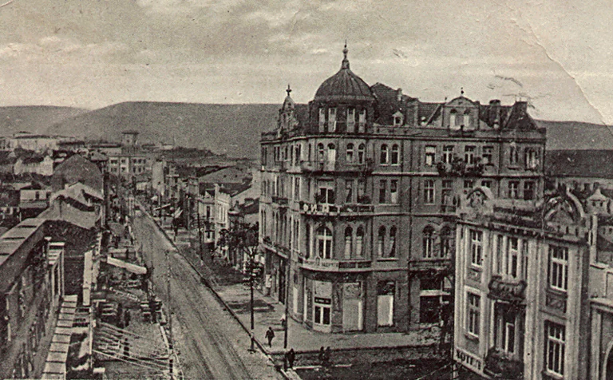
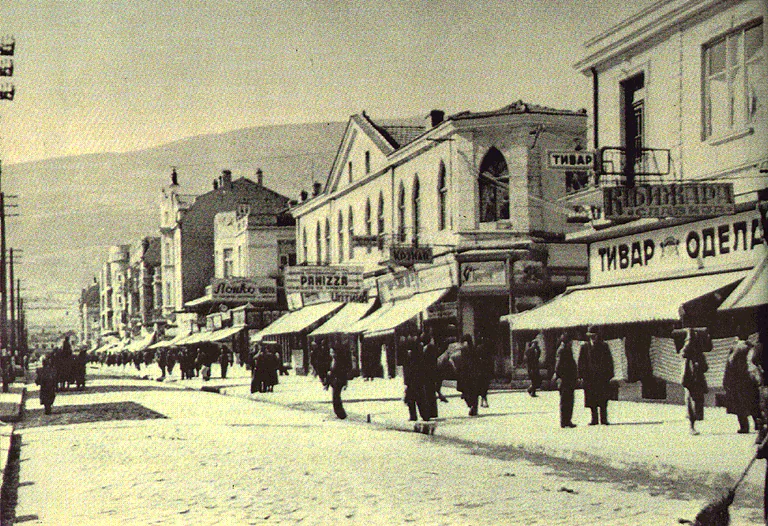
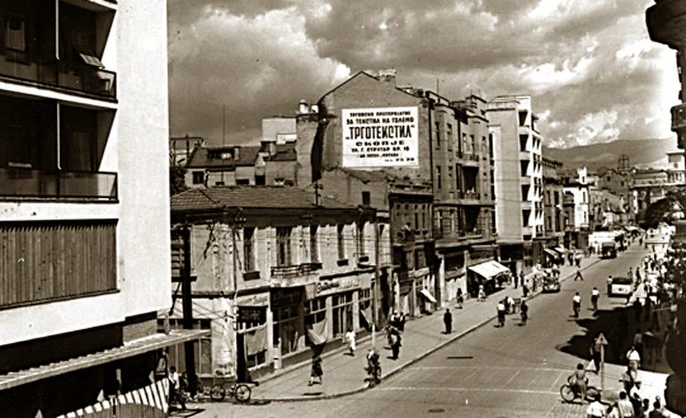
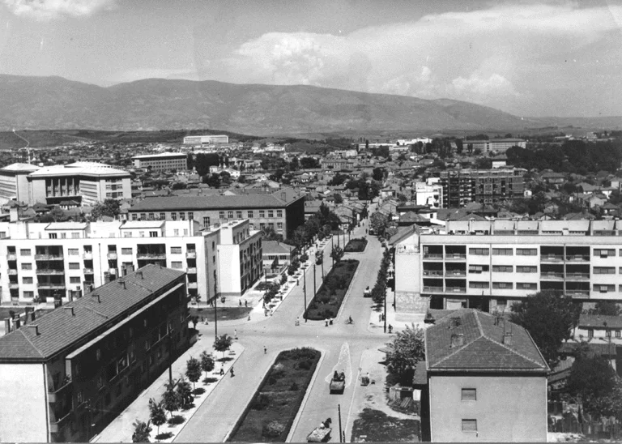
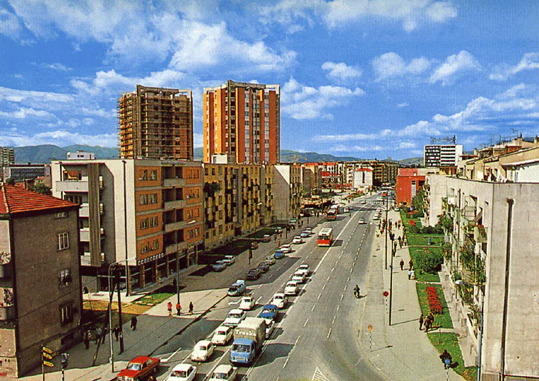

Marché vert
- Production
- UFUŽ et Film documentaire Prague
- Scénario et réalisation
- Slavko Janevski et EMAN CANERA
- Année
- 1959
- Durée
- 00:18

Maisons chrétiennes de Skopje - 1870.

Une partie de l'ancien bazar de Skopje, 1902. Une rangée de boutiques à volets devant le Kuršumli An. À l'arrière-plan, la tour du hammam Gülşen.

La rue principale en formation (aujourd'hui la rue « Makedonija », qui va de l'actuel musée de la ville de Skopje au pont de pierre). À droite, l'église catholique de style gothique et, à gauche, quelques bâtiments. La partie proche du pont de pierre fut pavée en 1911 pour le passage du sultan Murad V, venu visiter Skopje avant de partir pour le Kosovo Polje.

La photo a été prise depuis le bâtiment de l'ancienne gare - l'actuel musée de la ville de Skopje -, construit en 1873 sous l'Empire ottoman. Au premier plan, l'accès à la gare avec des espaces verts clôturés. Puis la rue principale qui mène à la place. Au début de la rue, à gauche, l'hôtel « Russie ».

Vue vers la rue principale « Makedonija ». L'arc a été dressé en l'honneur d'un hôte important. À sa gauche, l'hôtel « Russie ». - début du XXe siècle.

La rue principale avec l'hôtel « Moskva » - années 1920

La rue principale, l'actuelle Makedonija, menant de l'actuel musée de la ville de Skopje à la place. Au bout de la rue, le Cercle des officiers et, à sa droite, la Chambre de commerce - années 1930.

La rue principale, photographiée vers l'actuel musée de la ville de Skopje - vers 1920.

La rue principale (l'actuelle Makedonija), de la place vers la gare - vers 1920.

La rue principale, Makedonija, de l'actuel musée de la ville de Skopje vers la place. À gauche, l'hôtel Bristol ; à droite, le palais Krang. (années 1930)

La rue principale menant de l'actuel musée de la ville de Skopje à la place. Photographiée près de l'actuel hôtel « Bristol » et du palais Krang. À l'arrière-plan, le Cercle des officiers - vers 1935.

La rue principale menant de l'actuel musée de la ville de Skopje à la place. L'immeuble d'angle est le palais Krang - années 1930.

Le palais Krang. - années 1930.

La rue le long du quai sur la rive droite du Vardar. - années 1930

Une rue de la vieille ville vers l'ancien bazar - fin du XIXe siècle.

La rue du pont de pierre vers l'ancien bazar. - années 1920

Une rue de la vieille ville, vers le quartier de Čair. Au premier plan, une station de calèches et l'ancienne fontaine turque. À l'arrière-plan, des maisons d'architecture populaire ancienne - années 1920.

Le pont de pierre vers l'ancien bazar. À gauche, une rangée de boutiques ; à droite, la maison du dentiste Dr Ruben et une rangée de boutiques vers l'ancien bazar - vers 1935.

La rue « Kruševska » dans le quartier Pajko, années 1920.

Cette rue n'existe plus. Elle longeait la rue principale, de la place vers l'ancienne gare (l'actuel musée de la ville de Skopje) - années 1920

La rue principale (l'actuelle « Makedonija ») - années 1920.

Une rue de l'ancien bazar de Skopje. À l'arrière-plan, la mosquée Mustafa Pacha. - années 1930

Une rue de l'ancien bazar de Skopje. À l'arrière-plan, on voit la mosquée Mustafa Pacha. - années 1930

La rue « Cvetan Dimov » dans le quartier de Čair, années 1940. À l'arrière-plan, la mosquée Mehmed Pacha.

Skopje, années 1950. L'entrée de l'ancien bazar de Skopje - emplacement du grand magasin « Most ». Au premier plan, un groupe de boutiques démolies après le séisme de 1963. À gauche, une partie de la forteresse de Skopje - Kale. À l'arrière-plan, la mosquée Mustafa Pacha.

La petite place de l'ancien bazar de Skopje, années 1950.

La rue du 11 Octobre, photographiée depuis la place vers l'actuelle Assemblée de la R. de Macédoine. À l'arrière-plan, l'ancien bâtiment de l'Administration de l'intérieur. - années 1950

La rue du 11 Octobre avec l'Assemblée de la R. de Macédoine à gauche. À gauche, on voit aussi la tour médiévale. Au fond de la photo, une partie du bâtiment de l'ancienne poste. - fin des années 1950

La rue « Goce Delčev », photographiée depuis la place. Au premier plan à gauche, une partie de l'hôtel « Makedonija », effondré lors du séisme de 1963. - années 1950

La rue principale vers la place. Au premier plan, l'église catholique. - années 1950

La rue principale en direction de la gare (l'actuel musée de la ville de Skopje). À gauche, on voit l'église catholique. - années 1950

La rue principale « Makedonija », vers la place. - années 1950

Skopje, 1950. La partie ouest de la rue principale. À gauche, l'hôtel « Moskva ».

Au premier plan, le carrefour de la rue du 11 Octobre et du boulevard Kočo Racin. À droite de la tour en construction, l'ancienne boulangerie militaire de la Première Guerre mondiale - années 1950

Le carrefour du boulevard Kočo Racin et de la rue du 11 Octobre. - années 1950

La rue longeant l'hôpital municipal et l'Université ouvrière - années 1950

La rue du 11 Octobre - fin des années 1970, vers la place « Makedonija ».

Vue depuis la rue du 11 Octobre vers la place « Makedonija ». À gauche, des immeubles d'habitation ; à droite, le bâtiment de la compagnie d'électricité. - fin des années 1970


 Aqueduc4 cartes postales
Aqueduc4 cartes postales Kale30 cartes postales
Kale30 cartes postales Ponts60 cartes postales
Ponts60 cartes postales Quai58 cartes postales
Quai58 cartes postales Place46 cartes postales
Place46 cartes postales Édifices66 cartes postales
Édifices66 cartes postales Églises chrétiennes19 cartes postales
Églises chrétiennes19 cartes postales Édifices musulmans33 cartes postales
Édifices musulmans33 cartes postales Cercle des officiers29 cartes postales
Cercle des officiers29 cartes postales Théâtre28 cartes postales
Théâtre28 cartes postales Gare ferroviaire13 cartes postales
Gare ferroviaire13 cartes postales Écoles36 cartes postales
Écoles36 cartes postales Parcs12 cartes postales
Parcs12 cartes postales Marchés18 cartes postales
Marchés18 cartes postales Rues38 cartes postales
Rues38 cartes postales Panorama I60 cartes postales
Panorama I60 cartes postales Panorama II30 cartes postales
Panorama II30 cartes postales Collages55 cartes postales
Collages55 cartes postales Inondations9 cartes postales
Inondations9 cartes postales Séisme27 cartes postales
Séisme27 cartes postales Skopje 200026 cartes postales
Skopje 200026 cartes postales